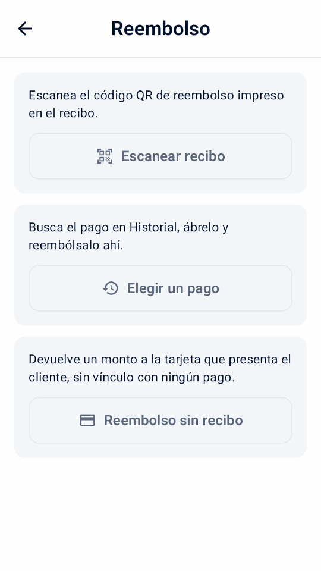
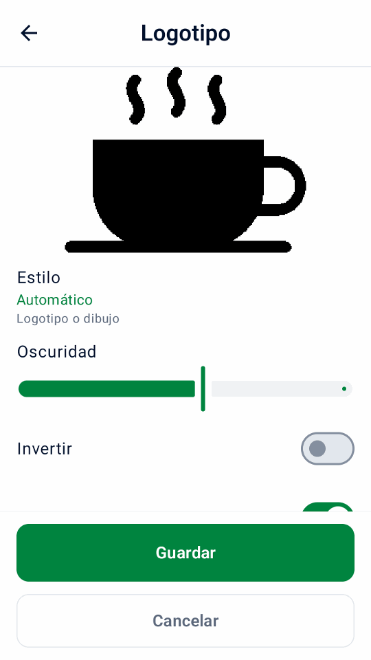
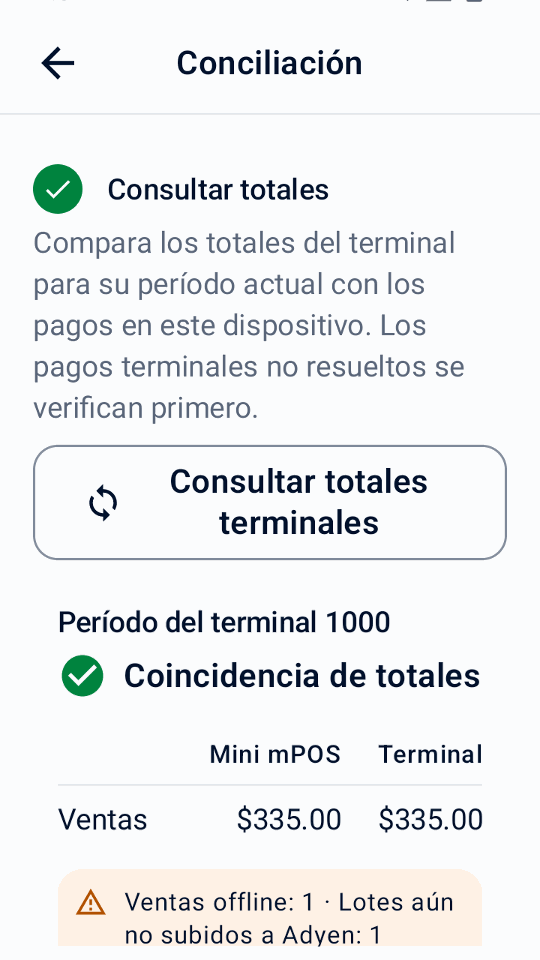
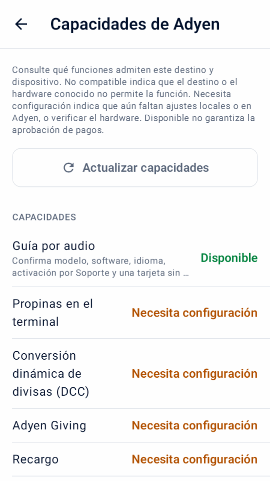
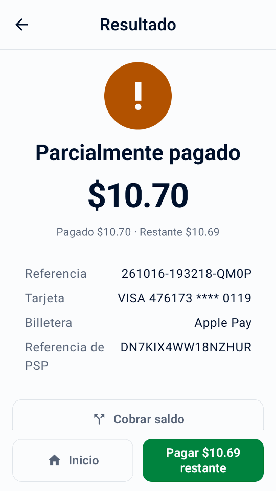
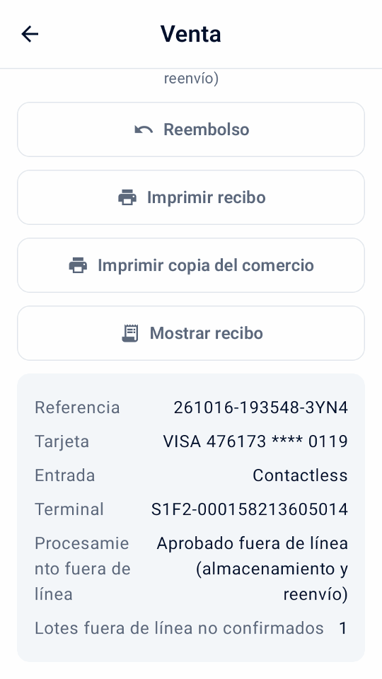
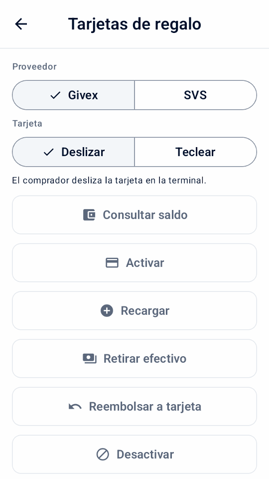
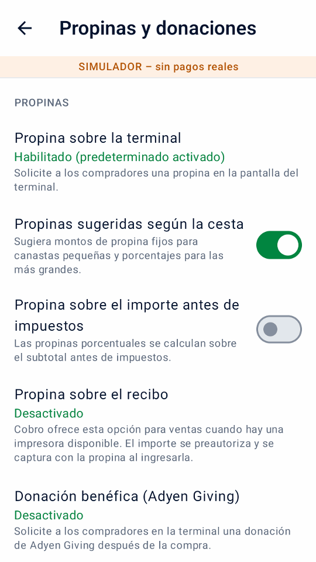

Guía
Usando Mini mPOS
Procedimientos paso a paso para el trabajo diario: recibir pagos, reembolsar, entregar recibos y cerrar el día. Los flujos de trabajo opcionales siguen al final.
Trabajo diario
Preparar productos, impuestos y acceso del personal.
Antes de aceptar pagos reales, complete la configuración de la conexión Adyen. Necesitas un terminal de pago o la aplicación Adyen Payments. Luego prepare sus productos, impuestos y acceso del personal una vez.
Establecer la moneda y los impuestos
- en Configuración › Pagos, elija un Moneda que su cuenta mercantil acepta para pagos en persona.
- en Configuración › Impuesto, verifique las tarifas, si los precios incluyen impuestos o si los impuestos se agregan al finalizar la compra, y la tarifa predeterminada para productos nuevos.
Cada producto tiene una tasa impositiva; Utilice una tasa del 0% para artículos libres de impuestos. Apagar Cobrar impuesto deja de cobrar impuestos pero mantiene las tarifas.
importante
Cambiar la moneda mantiene los números en tus precios; no los convierte a un tipo de cambio. Verifique los precios de sus productos después.
Agregar productos
- Abra Configuración › Productos y toque +.
- Introduzca un nombre, precio y tasa impositiva. Opcionalmente agregue una categoría y un código de barras, escrito o escaneado.
- Para un depósito, encienda Producto de preautorización para que aparezca sólo en las preautorizaciones.
Configurar los PIN del personal
En Configuración › Seguridad, toque Establecer PIN para proteger Configuración y Productos con un PIN de administrador, y elija cuándo se vuelve a bloquear el acceso. Toque Establecer PIN de gerente para las acciones protegidas; el PIN de administrador no las autoriza. Más adelante, use Cambiar PIN de administrador o Eliminar PIN de administrador.
En Permisos de gerente, elija qué acciones requieren el PIN de gerente. Las acciones similares comparten un interruptor; los reembolsos con referencia, sin recibo y en efectivo tienen uno propio. La aprobación del gerente en estas guías sigue estas opciones.
Sin PIN de administrador, todas las acciones están abiertas. Una vez que existe, las acciones protegidas quedan bloqueadas hasta establecer un PIN de gerente. Eliminar el PIN de administrador también elimina el PIN de gerente; las opciones de permisos se conservan. Varios PIN incorrectos bloquean el ingreso por un tiempo.
Realizar un pago con tarjeta
- En Inicio, toque Nueva venta. Toque productos, toque Escanear código de barras, o añadir un Artículo personalizado.
- Toque Cobrar. Verifique los artículos, impuestos y total, y complete los campos de referencia o correo electrónico.
- Toque pagar. El terminal, o la aplicación Adyen Payments con Tap to Pay, solicita el pago al cliente.
- Espere el resultado. No inicies otro pago hasta que aparezca.
- Entregue al cliente un recibo con Imprimir recibo, Enviar recibo por correo o Compartir recibo, a menos que se haya entregado automáticamente.
Nota
Según el terminal y su cuenta de comerciante, los clientes insertan o acercan una tarjeta, o acercan un teléfono o un reloj. Con Tap to Pay, la aplicación Adyen Payments los guía.
Advertencia
Resultado desconocido no significa que el pago haya fallado. Verifique el pago original antes de volver a cargar.
Las referencias del cliente y el guardado de tarjetas son opcionales; consulte referencias y tarjetas guardadas. Para dividir la cuenta o aceptar efectivo, tarjetas de regalo o vales de comida, consulte los flujos de pago opcionales. Para que los clientes paguen en su propio teléfono, use un enlace de pago. Si se rechaza un pago, consulte pagos rechazados.
Reembolsar o cancelar un pago
- Reembolsar
- Por un pago cobrado. Devuelve todo o parte del dinero.
- Cancelar (anular)
- Para un pago retenido que no ha sido capturado: toque Cancelar preautorización por un depósito, o Cancelar pago para una venta Esperando propina. Esto libera la retención.
Para reembolsar:
- En Inicio, toque Reembolso y luego Escanear recibo para escanear el código QR de reembolso del recibo, o Elegir un pago para abrir la venta original en Historial.
- Elija un reembolso completo, un importe o artículos individuales. Los reembolsos de artículos necesitan la venta original de este dispositivo.
- Confirme el reembolso e ingrese al Gerente PIN si se le solicita.


Estos reembolsos están vinculados a su pago original. Los enlaces de pago pagados se reembolsan en el Área de Clientes.
Una venta dividida se reembolsa a sus pagos originales. Mini mPOS propone cuánto devolver a cada tarjeta y cuánto efectivo entregar; toque un pago para ajustarlo. Primero se reembolsan las tarjetas, una a una, y luego el efectivo, que requiere un PIN de gerente. Si no se acepta un reembolso con tarjeta, no se devuelve nada más; abra la venta para revisar lo pendiente.
Una venta con un recargo informado devuelve primero los importes de compra, luego la propina y después el recargo; un reembolso total incluye el recargo restante.
Reembolso sin recibo
Use Reembolso sin recibo solo cuando no haya un pago que reembolsar, como una devolución sin recibo. Devuelve un importe a la tarjeta que presenta el comprador y no está vinculado a ningún pago, por lo que Mini mPOS no puede comprobar lo que se pagó. Usted es responsable de los reembolsos erróneos o repetidos.
Pida a Adyen que habilite los reembolsos sin referencia para la tienda y fije el límite de reembolso de Adyen en el Customer Area. Luego, en Configuración › Pagos, active Permitir reembolsos sin recibo, fije su propio Límite de reembolso y establezca un PIN de gerente. Adyen no permite estos reembolsos en algunos países ni para billeteras con código QR; Mini mPOS comprueba la tienda que Adyen verificó para el terminal.
Toque Reembolso sin recibo, ingrese el importe, elija un motivo, confirme y apruebe con el PIN de gerente; después el comprador presenta la tarjeta. Reembolso aprobado significa que el adquirente lo aprobó de inmediato; Reembolso solicitado significa que Adyen recibió la solicitud. El historial, los recibos y el informe diario muestran estos reembolsos por separado; concílielos manualmente.
Si el soporte de Adyen configuró un retraso de reembolso, active Retraso de reembolso configurado. Mientras dure el retraso, abra el reembolso y toque Cancelar reembolso; luego revise el Customer Area para saber si se detuvo.
Adyen: Unreferenced refunds · Adyen: Cancel an unreferenced refund
importante
Reembolso solicitado significa que Adyen recibió la solicitud, no que el cliente tenga el dinero. Comprueba el resultado final en el Área de Clientes. Si se desconoce el resultado de un reembolso, compruébalo antes de volver a intentarlo.
Imprima, envíe por correo electrónico o comparta recibos
Desde un resultado de pago o una entrada del Historial, toque Imprimir recibo o Enviar recibo por correo. Las tabletas y los teléfonos también ofrecen Compartir recibo, que envía una imagen a través del menú compartir de Android. Para imprimir se necesita un terminal con impresora.
Personaliza y prueba recibos
- en Configuración › Recibos, ingrese los datos de su negocio, encabezado y pie de página. O toque Importar datos comerciales desde Adyen para revisar los datos de Adyen. Elige Completar datos faltantes para conservar el texto existente o Reemplazar datos existentes para usar el nombre, la dirección y el teléfono proporcionados. Los campos importados vacíos, la identificación fiscal, el título y el pie de página no cambian.
- Elige Imprimir automáticamente, cuándo imprimir un Copia del comercio, y si Mostrar código de reembolso QR.
- Toque Imprimir recibo de prueba y verifique la impresión. La vista previa en pantalla no muestra el diseño exacto de la impresora.
Otras opciones:
- Mostrar montos de impuestos
- Muestra el impuesto incluido o sumado al total. No cambia el impuesto cobrado.
- Mostrar desglose de impuestos
- Enumera el impuesto para cada tasa. Es necesario mostrar impuestos incluidos cuando los precios incluyen impuestos.
- Mostrar totales imponibles por tasa
- Agrupa los totales de artículos por tasa impositiva, incluido el 0%.
- Mostrar referencias
- Activado de forma predeterminada. Imprime la referencia del comerciante y cualquier referencia del cliente, de modo que un recibo pueda relacionarse con su pago.
- Tasa impositiva marcada (%)
- Marca los elementos a ese ritmo con un Marcador de artículo y su explicación. Déjelo en blanco para que no haya marcador.
- Caracteres por línea
- 32 por defecto, para rollos de recibos angostos. Elija el ancho para su impresora con una impresión de prueba.
En Configuración › Recibos › Logotipo, elija una imagen PNG, JPEG o WebP. Si el dispositivo no tiene selector de archivos, envíela desde el asistente de configuración, sola o con otra configuración. Revise la vista previa en blanco y negro: Estilo elige Automático, Logotipo o Foto, y Oscuridad, Invertir y Recortar márgenes la ajustan. Elija un Tamaño grande o pequeño y guarde. Desactive Imprimir nombre del negocio si el logotipo ya lo incluye.
El logotipo aparece en los recibos impresos, enviados por correo y compartidos, incluidas las reimpresiones. Para ajustarlo, vuelva a elegir la imagen original; use Quitar logotipo para borrarlo.


Establecer el idioma
La aplicación está disponible en inglés, chino simplificado, chino tradicional, japonés, portugués de Brasil, español y francés. Configuración › Idioma cambia al instante el texto de la aplicación y las etiquetas de los recibos en este dispositivo; el texto guardado del comercio y los nombres de productos no cambian. Seguir dispositivo usa el idioma de Android para la aplicación. Las líneas de tarjeta de Adyen siguen el idioma de recibos del terminal.
Configurar recibos por correo electrónico
- Abra Configuración › Recibos por correo. Elija su proveedor o ingrese el servidor SMTP, el puerto, el remitente e inicie sesión. Utilice STARTTLS o SSL/TLS.
- Envía un correo electrónico de prueba.
- En la misma pantalla, elige cuándo solicitar el correo electrónico del cliente y si enviar los recibos automáticamente.
Siga las instrucciones de su proveedor para permitir SMTP y obtener la contraseña correcta:
Si los recibos no se imprimen ni envían, consulte Problemas con la impresora y el correo electrónico..
Encuentra pagos y cierra el día.
Historial enumera pagos y reembolsos por día, con totales diarios.
Cada página muestra hasta 100 entradas de siete días; use Anterior y Siguiente para navegar. La búsqueda abarca todas las transacciones conservadas.
- Filtrar por ventas, Esperando propina, preautorizaciones, reembolsos o Necesita atencióny Use Método de pago para una marca de tarjeta o billetera.
- Busca por referencia, código de autorización, referencia de cliente o correo electrónico, últimos cuatro
dígitos de la tarjeta, marca, billetera o monto exacto. Cada palabra debe coincidir:
visa 34encuentra pagos Visa de 34.
Los totales en pantalla siguen su búsqueda y filtros. Los pagos retenidos, como depósitos y propinas en el recibo, cuentan como ventas el día en que se acepta su captura.
cerrar el dia
- Abra Historial, filtrar por Necesita atención y resolver cada entrada; ver resultados desconocidos.
- Compruebe el Esperando propina y filtros de preautorización. Ingrese propinas y capture o cancele depósitos antes de que expiren sus retenciones.
- Toque el ícono de imprimir al lado del día para imprimir el Resumen diario local.
- Conciliar con los informes de Adyen en el Área de Clientes; ver el Guía de conciliación del liquidación de Adyen.
El resumen cubre todo el día, ignorando filtros: ventas, propinas incluidas, devoluciones aceptadas, neto, nuevas retenciones y operaciones no resueltas, para cada moneda. TEST y la actividad del simulador están etiquetadas. Los enlaces de pago pagados y las capturas sin fecha conocida se enumeran por separado como actividad sin fecha.
importante
El resumen diario local cubre solo los pagos guardados en este dispositivo. No es una liquidación de Adyen y no incluye otros dispositivos. El Área de Clientes tiene autoridad.
Advertencia
Al cambiar entre LIVE, TEST y el simulador se elimina permanentemente todo el historial de pagos y los datos de informes en este dispositivo. Si existen pagos pendientes, la aplicación vuelve a advertir: no se cancela nada en Adyen, pero se pierden los datos de recuperación local y reintento seguro. Los productos y la configuración permanecen.
Comparar con totales terminales y cerrar un período
- En Inicio, toque Conciliación, entonces Consultar totales terminales. Mini mPOS primero verifica los pagos de terminales pendientes o desconocidos, luego muestra Mini mPOS y las ventas y reembolsos de terminales uno al lado del otro.
- si Los totales difieren, resuelva los pagos que necesitan atención en Historial y verifique nuevamente. El período terminal no es necesariamente un día calendario; otros dispositivos que usan el terminal o faltan el historial local pueden causar diferencias. Los enlaces de pago, los cargos de tokens y el historial de muestras no son pagos terminales.
- Al final del día, toque Cerrar período del terminal, confirmar y completar la aprobación del Gerente si se solicita. El terminal finaliza su período e inicia uno nuevo; esto no se puede deshacer.
- Opcionalmente, toque Imprima el informe de hoy para el Resumen diario local.
No disponible con Tap to Pay. Una comparación coincidente o un período cerrado no confirman la liquidación, la finalización de reembolsos ni la carga sin conexión; el Customer Area sigue siendo la fuente autorizada.


Flujos opcionales
Verifique y configure las capacidades de Adyen
Abra Configuración › Capacidades de Adyen después de conectar su destino de pago. La pantalla muestra características como Disponible, Necesita configuración o No compatible con este destino. Estos son indicadores de configuración, no pruebas de que su cuenta de comerciante, tarjeta o método de pago puedan completar una transacción. Hasta que se configuren los pagos, la pantalla ofrece Terminar de configurar los pagos en cambio.
- Toque Actualizar capacidades para leer la configuración del terminal seleccionado. La inspección terminal real utiliza el Gestión de roles API en Inicio rápido.
- En terminales compatibles, configure la propina en el terminal para la moneda de pago, DCC, MOTO o los límites sin conexión y toque Guardar en Adyen. Esto cambia la configuración del terminal en Adyen.
- Active las opciones de pago que necesite en Pagos, Propinas y donaciones o Pantalla del terminal para el cliente en Configuración y pruébelas en TEST. La pantalla también muestra Adyen Giving, autorización parcial, recargo, tarjetas de regalo, conciliación del terminal y pantalla del cliente sin editarlos.
Tap to Pay no ofrece funciones de terminal físico como la propina en el terminal, la pantalla del cliente, MOTO/MKE, los pagos sin conexión ni la conciliación del terminal. Para la habilitación de la cuenta y los requisitos de métodos de pago, siga la documentación de pagos presenciales de Adyen.


Utilice flujos de trabajo de pago opcionales
Active en Configuración solo las opciones de pago que necesite. Salvo la autorización parcial, la división y los recargos, estos flujos requieren un terminal físico compatible, no Tap to Pay. Revise las capacidades de Adyen y pruebe su configuración real primero. La mayoría de las opciones no se pueden combinar en un pago; el cobro explica el conflicto y le pide desactivar una.
Aceptar pagos con guía por audio
Al cobrar, active Guía por audio para este comprador. Está disponible en AMS1, S1F2, S1F2L, S1E2L y S1U2 con software 1.117 o posterior, y en M450, P630 y SFO1 con 1.124 o posterior. El soporte de Adyen debe habilitarla para el terminal. Consulte los requisitos de pagos accesibles de Adyen.
Desactive las propinas, Giving y el ingreso manual, y seleccione Confirmar configuración accesible cuando haya comprobado el software y la habilitación. Use una tarjeta que no requiera firma y un idioma del terminal distinto de estonio, letón, islandés o lituano. El pago solicita el importe completo y omite los avisos de la pantalla del cliente.
El terminal lee las instrucciones en voz alta; dé tiempo al comprador. Mini mPOS espera hasta diez minutos el resultado. Si no llega respuesta, consulte el resultado desconocido antes de otro pago. La elección se restablece después de cada intento.
Recargos
Adyen agrega los recargos que usted configura en Adyen; Mini mPOS no los fija. Cuando Adyen informa uno, el historial, los recibos y el informe diario lo muestran separado de las compras y propinas; el total cobrado ya lo incluye. Un recargo no informado sigue siendo desconocido. Si una autorización parcial no informa el recargo, revise el Customer Area o reembolse la tarjeta original antes de empezar de nuevo.
Informe el recargo antes del pago, sobre todo con Tap to Pay, que no tiene pantalla de confirmación de recargo. No combine recargos con DCC. Mini mPOS bloquea ajustes y capturas por encima de la retención original cuando se informó un recargo. Consulte los requisitos de recargo de Adyen y la configuración de recargos de Adyen.
Tarjetas a meses en México
Confirme con Adyen sus programas de emisores y comisiones, active los meses en Configuración › Pagos y actualice las capacidades de Adyen para verificar la tienda mexicana. Al cobrar, elija débito, crédito en una sola exhibición o 3, 6, 9, 12 o 18 meses, y pague toda la venta con una tarjeta elegible. Los enlaces de pago, los tokens, las billeteras escaneadas y las tarjetas de regalo no llevan el plan.
Los detalles, el historial y los recibos muestran el plan solicitado y el devuelto. Un emisor no compatible puede rechazar el pago. Reembolse el pago original por importe o en su totalidad; el emisor gestiona el calendario.
Adyen: Tarjetas a meses en México
Cobrar un pago parcialmente autorizado
Active Permitir autorizaciones parciales para aceptar una aprobación de tarjeta por menos del importe solicitado. Cuando el resultado muestre Parcialmente pagado, revise los importes pagado y pendiente, toque Pagar restante y cobre el saldo con otra tarjeta. Los intentos quedan en la misma venta. No inicie una venta nueva por el total: la parte aprobada ya está pagada.
Una respuesta faltante no es una aprobación parcial. Resuelva los resultados desconocidos antes de cobrar más.


Dividir una venta o cobrar en efectivo
Al cobrar, toque Dividir o pagar en efectivo. Elija un Monto, Partes iguales o los Artículos que cubre este pago, y luego toque Tarjeta o Efectivo. Los precios y los impuestos se mantienen como se registraron, y cualquier centavo extra va a las primeras partes. Para efectivo, ingrese lo que entregó el comprador, devuelva el cambio indicado y confirme. El efectivo solo se registra en este dispositivo.
La venta queda como Parcialmente pagado hasta pagarse por completo. Toque Cobrar saldo en su resultado o en Historial para continuar, incluso después de reiniciar. Resuelva un resultado de tarjeta desconocido antes de cobrar más. El recibo lista cada pago; el informe diario muestra el efectivo por separado y los totales del terminal nunca lo incluyen.
Con tarjetas de regalo configuradas, toque Tarjeta de regalo para pagar el importe elegido con una; un saldo insuficiente se aprueba en parte. Los pagos con tarjeta de regalo se reembolsan a la tarjeta, salvo las tarjetas de regalo locales, que se reembolsan fuera de Mini mPOS.


Demostraciones del simulador en español de una venta dividida.
Retiro con compra
Después de que Adyen confirme su tienda y programa de tarjetas, active Retiro con compra en Configuración › Pagos, fije un límite de efectivo y establezca un PIN de gerente. Al cobrar, ingrese el efectivo adicional solicitado y pague toda la venta con una tarjeta elegible. Una compra puede aprobarse aunque se rechace su retiro; entregue solo el efectivo aprobado.
Retiro de efectivo
Retiro de efectivo, en Inicio, solicita efectivo sin compra. Actívelo por separado cuando Adyen confirme el retiro de efectivo eftpos australiano para la tienda.
Tras la aprobación, revise el efectivo aprobado y el cargo a la tarjeta. Entregue solo el efectivo aprobado, toque Registrar efectivo entregado y apruebe con el PIN de gerente. Nunca entregue efectivo cuyo importe no se informó, y consulte un resultado desconocido en lugar de volver a solicitar efectivo. El historial conserva las entregas sin registrar; los informes diarios muestran el efectivo aprobado y entregado separado de las ventas. Los reembolsos nunca devuelven el efectivo entregado.
Aceptar vales de comida
Active Vales de comida en Configuración › Pagos solo después de firmar los contratos con los emisores, registrar su tienda y que Adyen habilite los vales. El país verificado de la tienda del terminal decide qué vales aplican: vales PAT de Brasil; vales Mastercard o Visa en Bélgica, Finlandia, Alemania, Luxemburgo y España; o Titres-restaurant en Francia. Actualice las capacidades de Adyen tras configurar. No se ofrecen Monizze, Pluxee Bélgica ni Lunch Check.
Donde los vales requieren productos elegibles, abra cada producto en Configuración › Productos y active Elegible para vales de comida; los artículos personalizados nunca son elegibles. Al cobrar, toque Dividir o pagar en efectivo y luego Vale de comida. Mini mPOS ofrece lo máximo que puede pagar el vale; cobre el resto con tarjeta o efectivo. Los vales Mastercard o Visa pueden aprobarse en parte. Los Titres-restaurant aceptan como máximo EUR 25 al día, nunca en domingo ni días festivos, y no se pueden reembolsar: ofrezca crédito en tienda. Un vale brasileño con saldo insuficiente se rechaza; ingrese un importe menor.
En Brasil, active Elegir vales brasileños en la app para solicitar un pago con vale desde Mini mPOS. Déjelo desactivado si el soporte de Adyen habilitó la pantalla propia de crédito, débito o vale del terminal; entonces cobre con tarjeta y el comprador elige en el terminal. Las devoluciones de vales vuelven al vale original, nunca en efectivo.
Adyen: vales de comida en Brasil · Adyen: vales de comida en Europa
Utilice la pantalla del terminal orientada al comprador
Con un terminal de red/nube independiente, abra Configuración › Pantalla del terminal para el cliente. Elija si desea mostrar los detalles del artículo antes del pago, pedirle al comprador que confirme el pedido o recibir un correo electrónico cuando no haya ninguno en el proceso de pago. Solicitar un correo electrónico necesita recibos por correo electrónico por configurar; el recibo se envía automáticamente por correo electrónico cuando Enviar el recibo por correo electrónico automáticamente está encendido. Después de la aprobación, puede mostrar un código QR y solicitar una calificación de 0 a 10; una calificación devuelta aparece en los detalles de la transacción.
Estos avisos usan el idioma de la aplicación. No se ofrecen cuando Mini mPOS se ejecuta en el propio terminal de pago. El código QR contiene la referencia del comercio, no un recibo; de todos modos entregue el recibo.
Invitar a una donación benéfica
Después de organizar Adyen Giving con Adyen, habilite Donación benéfica (Adyen Giving) en Configuración › Propinas y donaciones. Al finalizar la compra, selecciónelo para invitar a una donación en el terminal después del pago. No se ofrece para preautorizaciones ni retenciones de recibos.
La compra y la donación son independientes. El monto de la donación reportado aparece en los detalles de la transacción; una compra aprobada por sí sola no confirma una donación.
Realice un pago MOTO o entrada de clave manual
- Consulta con Adyen que tu terminal y cuenta permiten el modo de ingreso requerido. Configurar MOTO en Capacidades de Adyen cuando sea necesario y establezca los PIN del personal en PIN del personal.
- en Configuración › Pagos, habilite la opción MOTO o Entrada de clave manual. Al finalizar la compra, seleccione Pedido por correo/teléfono (MOTO) para un pedido remoto, o Ingreso manual de tarjeta (MKE) cuando falla el chip o la lectura sin contacto. Sólo se puede seleccionar uno.
- Toque Pagar, revise la advertencia de responsabilidad por fraude y contracargos y complete la aprobación del gerente cuando se solicite.
Las transacciones con ingreso manual conllevan mayor responsabilidad por fraude y contracargos para el comercio.
Reconocer pagos fuera de línea y lotes pendientes
EMV sin conexión y Store-and-Forward necesitan un terminal compatible con acceso local: Mini mPOS en ese terminal o un terminal en su red. No se ofrecen a través de enrutamiento en la nube o Tap to Pay. Organice el procesamiento fuera de línea con Adyen y revise sus riesgos antes de establecer límites en Capacidades de Adyen; Mini mPOS no pone en cola los pagos ni hace que se pueda acceder a una terminal cuando su red local no funciona.
Las marcas históricas informaron ventas fuera de línea. Abrir una venta para ver Procesamiento fuera de línea, ya sea que utilizó EMV fuera de línea o Store-and-Forward, y cualquier Lotes fuera de línea no confirmados informado por la terminal. Una aprobación fuera de línea puede no tener todavía ninguna referencia PSP. No es un resultado desconocido, pero no confirma que Adyen haya recibido o liquidado el pago.
Restaure la conexión del terminal con Adyen y verifique los pagos cargados y los resultados finales en el Área de Clientes. Verifique las advertencias de lotes no confirmados y sin conexión durante conciliación terminal; los totales coincidentes no confirman la liquidación fuera de línea. Si no llegó una respuesta de pago concluyente, siga recuperación de resultado desconocido en lugar de asumir la aprobación fuera de línea o cobrar nuevamente.


Escanee el código de la billetera de un comprador
Use Escanear billetera en la caja de venta para leer un código de pago desde la aplicación de billetera del comprador. Esto es diferente a escanear el código de barras de un producto o un recibo de reembolso. Funciona con una terminal de pago física, no con Tap to Pay; el descubrimiento de billetera necesita una función de lectura.
- Verifique los campos de total y pago, luego toque Escanear billetera. Si se selecciona la propina en recibo, confirme el pago sin ella: la billetera carga el total inmediatamente, no una autorización previa.
- Elija la billetera del comprador. Se selecciona automáticamente una única billetera disponible. Sólo aparecen carteras configuradas individualmente; Alipay+ no implica opciones separadas de GCash, DANA, Kakao Pay o TrueMoney.
- En un terminal equipado con un escáner confirmado, presione su botón de escaneo. Este puede ser el terminal de red/nube, no el dispositivo que ejecuta Mini mPOS. Para escanear con la cámara del dispositivo, toque Usar cámara.
- Escanee el código de pago QR o el código de barras de pago del comprador. Un escaneo válido inicia el pago inmediatamente. Espere el resultado normal del pago y entregue su recibo.
Cancelar conserva el carrito. Un escaneo del terminal termina a los 30 segundos; use Escanear de nuevo o la cámara. Es posible que las billeteras no admitan Guardar tarjeta; un pago aprobado sin token guardado sigue aprobado. Resuelva problemas de billeteras y nunca reemplace un pago desconocido escaneando de nuevo.
Confirme la configuración de su billetera y pruebe el comportamiento con el Guía de billetera Adyen y Guía de Adyen PayPal y Venmo.


Demostraciones del simulador en español de escaneo de billeteras.
Utilice referencias y guarde tarjetas.
- Referencia del comerciante
- Para registrar una reserva o un número de pedido, active Configuración › Pagos › Solicite una referencia de comerciante. El número identifica el pago en Adyen. Si se deja en blanco, se genera una referencia única.
- Referencia del comprador
- en Configuración › Pagos, elija el Referencia del comprador: una referencia del cliente escrita al finalizar la compra (el valor predeterminado), el correo electrónico del cliente o ninguno. Se envía a Adyen con cada pago. Las referencias de correo electrónico tienen hash de forma predeterminada; Utilice la misma salt en todos los dispositivos.
- Tarjetas guardadas
- Con un conjunto de referencias de comprador, active Ofrecer guardar tarjetas y elige el Modelo de procesamiento recurrente para su configuración de Adyen. Obtenga el consentimiento del cliente antes de seleccionar Guardar tarjeta para futuros pagos. Para cargar uno más tarde, consulte Administrar tokens.
Administrar tokens
- En Inicio, toque Tokens e ingrese al Administrador PIN si se le solicita.
- Ingrese la referencia del cliente, o el correo electrónico cuando sea la referencia del comprador, y toque Buscar tokens.
- Toque Cobrar junto a un token y agregue productos o un Artículo personalizado. Este carrito es independiente de Nueva venta.
- Revise el cargo y toque Cobrar.
El cliente no está presente, así que obtenga antes su consentimiento. Los tokens guardados con otro Modelo de procesamiento recurrente no se pueden cobrar aquí. Reembolse estos pagos desde Historial. Si el resultado de un cobro es desconocido, consúltelo desde el historial durante siete días y, después, en el Customer Area. En el cobro de una nueva venta, Cobrar token aparece cuando la referencia del comprador tiene tokens guardados.
Para eliminar un token, toque su acción Eliminar, revise los detalles, confirme y apruebe con el PIN de gerente. La eliminación quita el token en Adyen para Mini mPOS y para cualquier otra integración; no se puede deshacer. Los pagos anteriores y sus reembolsos siguen disponibles. Si la eliminación no se confirma, toque Comprobar eliminación antes de cobrar o eliminar de nuevo.
Vender y administrar tarjetas de regalo
Las tarjetas de regalo funcionan con una terminal Adyen; Tap to Pay no las acepta. En Configuración › Pagos › Tarjetas de regalo, activa cada proveedor con el que completaste la incorporación en Adyen, agrega el tipo de tarjeta que Adyen te indicó para Intersolve o tarjetas locales y elige cómo presenta el personal las tarjetas: escanear con la cámara e ingresar el vencimiento, o deslizar o teclear en la terminal. Solo se ofrecen las acciones que Adyen documenta para cada proveedor: la desactivación es solo para Givex y las tarjetas locales solo aceptan pagos.
- En Inicio, toca Tarjetas de regalo y elige el proveedor y cómo se presenta la tarjeta.
- Elige Consultar saldo, Activar, Recargar, Retirar efectivo, Reembolsar a tarjeta o Desactivar.
- Para agregar valor, elige Pago con tarjeta, o Recibido fuera de la app y confirma que recibiste el dinero.
- Confirma y aprueba con el PIN de gerente.


La aprobación de consultas de saldo y cambios de valor sigue los permisos del personal. Primero se cobra el pago con tarjeta y el valor se envía solo cuando se aprueba; si el resultado del pago se desconoce, consúltalo antes de continuar. Si se cobró el pago pero no se agregó valor, la actividad muestra Valor no agregado: envía el valor de nuevo, reembolsa el pago con tarjeta o registra el dinero devuelto. Nada se repite automáticamente.
Deshacer recarga aparece para la última recarga de la tarjeta dentro de 24 horas. Un retiro de efectivo normalmente paga todo el saldo y cierra la tarjeta; solo algunas tarjetas Givex permiten menos. Entrega el efectivo cuando se apruebe y toca Efectivo entregado; una entrega sin confirmar queda en Requiere atención, también tras reiniciar. La actividad de tarjetas de regalo aparece en Historial y por separado en el reporte diario; nunca cuenta como venta.
Recibir pago con un enlace
Requisitos previos
- Su cuenta mercantil cumple con los Requisitos de Adyen Pay by Link, incluidos los términos y condiciones, antes del Use en vivo
- En la caja de una oferta, toque Crear enlace de pago.
- Muestra el código QR o toca Enviar enlace por correo, Imprimir enlace o, en una tableta o teléfono, Compartir enlace.
- Mantenga abierta la pantalla de enlace para ver cómo llega el pago, o luego toque Verificar pago en su entrada de Historial.
- Si el enlace ya no es necesario, toque Cancelar enlace.
La entrada muestra En espera de pago hasta que el enlace sea pagado, caduque o sea cancelado. Establecer la duración de los enlaces Configuración › Pagos › Enlaces de pago. Los enlaces son solo para ventas, no para depósitos ni propinas en el recibo.
importante
Cualquiera que tenga un enlace real puede pagar hasta que caduque. Reembolsar enlaces pagados en Área de Clientes › Pagos › Lista de pagos; la aplicación no puede reembolsarlos.
Si falta un enlace o no se actualiza, consulte problemas con el enlace de pago.
Retener y cobrar un depósito
Requisitos previos
- Autorización previa habilitada por Soporte de Adyen para sus métodos de pago; ver el Guía de preautorización de Adyen
Una preautorización retiene un importe en la tarjeta sin cobrarlo. Toda su cuenta no necesita captura manual; Mini mPOS lo solicita únicamente para estos pagos.
- En Inicio, toque Nueva preautorización. Elija un producto con autorización previa, escanee su código de barras o ingrese un monto. Cada preautorización tiene un ítem.
- Al finalizar la compra, toque Preautorizar. El recibo muestra el importe retenido.
- Cuando estés listo, abre la entrada en Historial y elige una acción:
- Capturar
- Cobra el importe adeudado. Una importe menor libera el resto; un importe mayor primero solicita al emisor de la tarjeta que aumente la retención. Los reembolsos son posibles una vez que se solicita la captura.
- Ajustar importe
- Cambia el importe retenido sin cobrarla. Al presentar el mismo importe se renueva la autorización.
- Cancelar preautorización
- Libera la retención. Si el pago ya fue capturado en el Área de Clientes, Adyen lo reembolsa en su totalidad.
Captura solicitada no es una confirmación final; revisa el Área de Clientes. Para obtener respuestas inmediatas a los ajustes, habilite Devolver datos de autorización de ajuste como se describe en el Guía de ajuste de autorización de Adyen.
Advertencia
Las retenciones caducan. Verifique el filtro de preautorización diariamente y capture o cancele con prontitud. Para operaciones fallidas o desconocidas, consulte problemas de captura.
Recoger una propina en la terminal.
- Compruebe las propinas en el terminal en Capacidades de Adyen. Configure las opciones de propina predefinidas y personalizadas del terminal para la moneda de pago cuando sea necesario.
- en Configuración › Propinas y donaciones, habilitar Propina sobre la terminal y elija su valor predeterminado de pago. Opcionalmente habilitar Propinas sugeridas según la cesta para cantidades fijas en cestas pequeñas y porcentajes en las más grandes, o Propina sobre el importe antes de impuestos.
- En Cobro de una venta, seleccione Propina sobre la terminal y toque pagar. El comprador elige una propina antes de que se cargue la tarjeta. Verifique el total devuelto y la propina y entregue el recibo.
Esto no necesita una impresora ni una entrada de propinas posterior. Propinas en el terminal y propinas sobre el recibo no se pueden seleccionar juntas. Tampoco se ofrece para autorizaciones previas, pagos con billetera escaneada o enlaces de pago; Las propinas en el terminal no se ofrecen con Tap to Pay.


Recoge una propina escrita en el recibo.
Requisitos previos
- Un terminal con una impresora.
- Autorización previa y sobrecaptura habilitadas por el soporte de Adyen; ver el Guía de propinas en recibos de Adyen
en Configuración › Propinas y donaciones, elija Habilitado (desactivado por defecto) o Habilitado (predeterminado activado) para configurar cómo se inicia el interruptor de pago. Desactivado, por defecto, lo oculta. Algunas tarjetas de débito y billeteras no admiten este flujo.
- En Cobro de una venta, active Propina sobre el recibo y toque pagar. La factura se retiene, no se cobra.
- Imprime el recibo. Tiene líneas de propina y total en blanco, y la copia del comerciante tiene una línea de firma.
- Cuando el cliente lo haya completado, toque Introducir propina en el resultado o use el filtro Esperando propina en Historial.
- Ingresa la propina o el total, o toca Sin propinay confirmar.
La aplicación captura la factura más la propina. Las propinas superiores al 20% primero necesitan que el emisor de la tarjeta aumente la retención; si se niega, ingrese una propina menor o ninguna. Una propina guardada no se puede cambiar. Antes de ingresar una propina, cancele el pago en lugar de reembolsarlo; posteriormente, los reembolsos incluyen la propina.
Advertencia
Ingrese pronto todas las propinas, incluido cero, para capturar los importes antes de que expiren las retenciones. Para capturas fallidas o desconocidas, consulte problemas de captura.
Configura más dispositivos y administra datos
- En el dispositivo configurado, abra Configuración › Datos y transferencia › Compartir con otro dispositivo. Elija el catálogo, la configuración y/o las contraseñas y claves, luego toque Mostrar códigos QR.
- En el nuevo dispositivo, elija Configurar desde otro dispositivo y escanea todos los códigos, en cualquier orden. Elija si desea fusionar o reemplazar su catálogo.
- Ingrese el código de transferencia de 12 caracteres que se muestra en el primer dispositivo, inclUse cuando copie solo productos o configuraciones. Manténgalo separado de los códigos QR. Toque Importar.
- Consulta precios e impuestos, prueba la conexión en Configuración › Terminale imprimir un recibo de prueba.
El nuevo dispositivo mantiene su propio destino de pago, terminal, entorno y registro Tap to Pay. Una clave compartida funciona para otro terminal sólo si Adyen le asigna la misma clave.
importante
Esta es una copia única, no una sincronización ni una copia de seguridad del historial de pagos. Cada dispositivo mantiene sus propios pagos. Al borrar los datos de la aplicación en Android, se eliminan todos los productos, configuraciones e historial del dispositivo.
en Configuración › Datos y transferencia, establecer Mantener transacciones para o toque Borrar historial asentado; Los pagos no resueltos siempre se conservan.
En una tableta o teléfono, Mini mPOS busca una versión más reciente al inicio. Si Inicio ofrece Actualizar, tóquelo para abrir APK en su navegador, luego instale la descarga. Los terminales Adyen se actualizan a través del Área de Clientes, no a través de este mensaje. También puedes conseguir el último lanzamiento y sigue el pasos de instalación. Mantenga la misma fuente de firma e instálela sobre la aplicación existente; no desinstale ni borre sus datos.
Para problemas de importación, consulte PIN y problemas de transferencia .